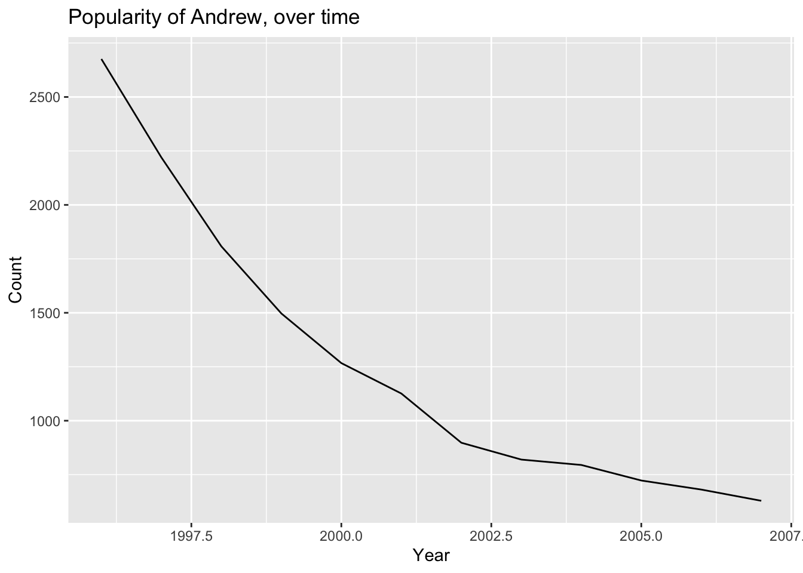

R Data Wrangling
Topics
- Loading Excel worksheets
- Iterating over files
- Writing your own functions
- Filtering with regular expressions (regex)
- Reshaping data
Setup
Software and Materials
Follow the R Installation instructions and ensure that you can successfully start RStudio.
Class Structure
Informal - Ask questions at any time. Really!
Collaboration is encouraged - please spend a minute introducing yourself to your neighbors!
Prerequisites
This is an intermediate / advanced R course:
- Assumes intermediate knowledge of R
- Relatively fast-paced
Launch an R session
Start RStudio and create a new project:
- On Windows click the start button and search for RStudio. On Mac RStudio will be in your applications folder.
- In Rstudio go to
File -> New Project. - Choose
Existing Directoryand browse to the workshop materials directory on your desktop. - Choose
File -> Open Fileand select the file with the word “BLANK†in the name.
Packages
You should have already installed the tidyverse and rmarkdown
packages onto your computer before the workshop
— see R Installation.
Now let’s load these packages into the search path of our R session.
Workshop Outline
Example data
The UK Office for National Statistics provides yearly data on the most popular boys names going back to 1996. The data is provided separately for boys and girls and is stored in Excel spreadsheets.
Overall Goal
Our mission is to extract and graph the top 100 boys names in England and Wales for every year since 1996.

Exercise 0: Problems with the data
There are several things that make our goal challenging. Let’s take a look at the data:
Locate the files named
1996boys_tcm77-254026.xlsxand2015boysnamesfinal.xlsxand open them separately in a spreadsheet program.(If you don’t have a spreadsheet program installed on your computer you can download one from https://www.libreoffice.org/download/download/).
What issues can you identify that might make working with these data difficult?
In what ways is the format different between the two files?
Click for Exercise 0 Solution
- Multiple Excel sheets in each file, each with a different name, but each file contains a
Table 1. - The data does not start on row one. Headers are on row 7, followed by a blank line, followed by the actual data.
- The data is stored in an inconvenient way, with ranks 1-50 in the first set of columns and ranks 51-100 in a second set of columns.
- The second worksheet
2015boysnamesfinal.xlsxcontains extra columns between the data of interest, resulting in the second set of columns (ranks 51-100) being placed in a different position. - The year from which the data comes is only reported in the Excel file name, not within the data itself.
- There are notes below the data.
These differences will make it more difficult to automate re-arranging the data since we have to write code that can handle different input formats.
Steps to accomplish the goal of extracting and graphing the top 100 boys names in England and Wales for every year since 1996:
Explore example data to highlight problems (already done!)
Reading data from multiple Excel worksheets into R data frames
- list Excel file names in a character vector
- read Excel sheetnames into a list of character vectors
- read Excel data for “Table 1†only into a list of data frames
Clean up data within each R data frame
- sort and merge columns within each data frame inside the list
- drop missing values from each data frame
- reshape data format from wide to long
Organize the data into one large data frame and store it
- create a year column within each data frame within the list
- append all the data frames in the list into one large data frame
NOTE: please make sure you close the Excel files before continuing with the workshop, otherwise you may encounter issues with file paths when reading the data into R.
Working with Excel worksheets
GOAL: To learn how to read data from multiple Excel worksheets into R data frames. In particular:
- List Excel file names in a character vector
- Read Excel sheetnames into a list of character vectors
- Read Excel data for “Table 1†only into a list of data frames
As you can see, the data is in quite a messy state. Note that this is not a contrived example; this is exactly the way the data came to us from the UK government website! Let’s start cleaning and organizing it.
Each Excel file contains a worksheet with the boy names data we want. Each file also contains additional supplemental worksheets that we are not currently interested in. As noted above, the worksheet of interest differs from year to year, but always has “Table 1†in the sheet name.
The first step is to get a character vector of file names.
Now that we’ve told R the names of the data files, we can start working with them. For example, the first file is
## [1] "dataSets/boys/1996boys_tcm77-254026.xlsx"and we can use the excel_sheets() function from the readxl package
within tidyverse to list the worksheet names from this file.
## [1] "Contents" "Table 1 - Top 100 boys, E&W"
## [3] "Table 2-Top 10 boys by month" "Table 3 - Boys names - E&W"Iterating with map()
Now that we know how to retrieve the names of the worksheets in an Excel file, we could start writing code to extract the sheet names from each file, e.g.,
## [1] "Contents" "Table 1 - Top 100 boys, E&W"
## [3] "Table 2-Top 10 boys by month" "Table 3 - Boys names - E&W"## [1] "Contents" "Table 1 - Top 100 boys, E&W"
## [3] "Table 2 - Top 100 boys, England" "Table 3 - Top 100 boys, Wales"
## [5] "Table 4 - Top 10 boys by region" "Table 5 - Top 10 boys by month"
## [7] "Table 6 - Boys names - E&W"## [1] "Contents" "Metadata" "Terms and Conditions"
## [4] "Table 1" "Table 2" "Table 3"
## [7] "Table 4" "Table 5" "Table 6"
## [10] "Related Publications"This is not a terrible idea for a small number of files, but it is
more convenient to let R do the iteration for us. We could use a for loop,
or sapply(), but the map() family of functions from the purrr
package within tidyverse gives us a more consistent alternative,
so we’ll use that.
# map(object to iterate over, function that does task within each iteration)
map(boy_file_names, excel_sheets)## [[1]]
## [1] "Contents" "Table 1 - Top 100 boys, E&W"
## [3] "Table 2-Top 10 boys by month" "Table 3 - Boys names - E&W"
##
## [[2]]
## [1] "Contents" "Table 1 - Top 100 boys, E&W"
## [3] "Table 2 - Top 100 boys, England" "Table 3 - Top 100 boys, Wales"
## [5] "Table 4 - Top 10 boys by region" "Table 5 - Top 10 boys by month"
## [7] "Table 6 - Boys names - E&W"
##
## [[3]]
## [1] "Contents" "Table 1 - Top 100 boys' names"
## [3] "Table 2 - Top 100 boys, England" "Table 3 - Top 100 boys, Wales"
## [5] "Table 4 - Top 10 boys by region" "Table 5 - Top 10 boys by month"
## [7] "Table 6 - Boys names - E&W"
##
## [[4]]
## [1] "Contents" "Table 1 - Top 100 boys' names"
## [3] "Table 2 - Top 100 boys, England" "Table 3 - Top 100 boys, Wales"
## [5] "Table 4 - Top 10 boys by region" "Table 5 - Top 10 boys by month"
## [7] "Table 6 - Boys names - E&W"
##
## [[5]]
## [1] "Contents" "Table 1 - Top 100 boys, E&W"
## [3] "Table 2 - Top 100 boys, England" "Table 3 - Top 100 boys, Wales"
## [5] "Table 4 - Top 10 boys by region" "Table 5 - Top 10 boys by month"
## [7] "Table 6 - Boys names - E&W"
##
## [[6]]
## [1] "Contents" "Table 1 - Top 100 boys, E&W"
## [3] "Table 2 - Top 100 boys, England" "Table 3 - Top 100 boys, Wales"
## [5] "Table 4 - Top 10 boys by region" "Table 5 - Top 10 boys by month"
## [7] "Table 6 - Boys names - E&W"
##
## [[7]]
## [1] "Contents" "Table 1 - Top 100 boys, E&W"
## [3] "Table 2 - Top 100 boys, England" "Table 3 - Top 100 boys, Wales"
## [5] "Table 4 - Top 10 boys by region" "Table 5 - Top 10 boys by month"
## [7] "Table 6 - Boys names - E&W"
##
## [[8]]
## [1] "Contents" "Table 1 - Top 100 boys, E&W"
## [3] "Table 2 - Top 100 boys, England" "Table 3 - Top 100 boys, Wales"
## [5] "Table 4 - Top 10 boys by region" "Table 5 - Top 10 boys by month"
## [7] "Table 6 - Boys names - E&W"
##
## [[9]]
## [1] "Contents" "Table 1 - Top 100 boys, E&W"
## [3] "Table 2 - Top 100 boys, England" "Table 3 - Top 100 boys, Wales"
## [5] "Table 4 - Top 10 boys by region" "Table 5 - Top 10 boys by month"
## [7] "Table 6 - Boys names - E&W"
##
## [[10]]
## [1] "Contents" "Table 1 - Top 100 boys, E&W"
## [3] "Table 2 - Top 100 boys, England" "Table 3 - Top 100 boys, Wales"
## [5] "Table 4 - Top 10 boys by region" "Table 5 - Top 10 boys by month"
## [7] "Table 6 - Boys names - E&W"
##
## [[11]]
## [1] "Contents" "Table 1 - Top 100 boys, E&W"
## [3] "Table 2 - Top 100 boys, England" "Table 3 - Top 100 boys, Wales"
## [5] "Table 4 - Top 10 boys by region" "Table 5 - Top 10 boys by month"
## [7] "Table 6 - Boys names - E&W"
##
## [[12]]
## [1] "Contents" "Table 1 - Top 100 boys, E&W"
## [3] "Table 2 - Top 100 boys, England" "Table 3 - Top 100 boys, Wales"
## [5] "Table 4 - Top 10 boys by region" "Table 5 - Top 10 boys by month"
## [7] "Table 6 - Boys names - E&W"
##
## [[13]]
## [1] "Contents" "Table 1 - Top 100 boys' names"
## [3] "Table 2 - Top 100 boys, England" "Table 3 - Top 100 boys, Wales"
## [5] "Table 4 - Top 10 boys by region" "Table 5 - Top 10 boys by month"
## [7] "Table 6 - Boys names - E&W"
##
## [[14]]
## [1] "Contents" "Table 1 - Top 100 boys' names"
## [3] "Table 2 - Top 100 boys, England" "Table 3 - Top 100 boys, Wales"
## [5] "Table 4 - Top 10 boys by region" "Table 5 - Top 10 boys by month"
## [7] "Table 6 - Boys names - E&W"
##
## [[15]]
## [1] "Contents" "Table 1 - Top 100 boys, E&W"
## [3] "Table 2 - Top 100 boys, England" "Table 3 - Top 100 boys, Wales"
## [5] "Table 4 - Top 10 boys by region" "Table 5 - Top 10 boys by month"
## [7] "Table 6 - Boys names - E&W"
##
## [[16]]
## [1] "Contents" "Metadata"
## [3] "Terms and Conditions" "Table 1 - Top 100 boys, E&W"
## [5] "Table 2 - Top 100 boys, England" "Table 3 - Top 100 boys, Wales"
## [7] "Table 4 - Top 10 boys by region" "Table 5 - Top 10 boys by month"
## [9] "Table 6 - Boys names - E&W" "Related Publications"
##
## [[17]]
## [1] "Contents" "Metadata"
## [3] "Terms and Conditions" "Table 1 - Top 100 boys, E&W"
## [5] "Table 2 - Top 100 boys, England" "Table 3 - Top 100 boys, Wales"
## [7] "Table 4 - Top 10 boys by region" "Table 5 - Top 10 boys by month"
## [9] "Table 6 - Boys names - E&W" "Related Publications"
##
## [[18]]
## [1] "Contents" "Metadata"
## [3] "Terms and Conditions" "Table 1 - Top 100 boys, E&W"
## [5] "Table 2 - Top 100 boys, England" "Table 3 - Top 100 boys, Wales"
## [7] "Table 4 - Top 10 boys by region" "Table 5 - Top 10 boys by month"
## [9] "Table 6 - Boys names - E&W" "Related Publications"
##
## [[19]]
## [1] "Contents" "Metadata"
## [3] "Terms and Conditions" "Table 1 - Top 100 boys, E&W"
## [5] "Table 2 - Top 100 boys, England" "Table 3 - Top 100 boys, Wales"
## [7] "Table 4 - Top 10 boys by region" "Table 5 - Top 10 boys by month"
## [9] "Table 6 - Boys names - E&W" "Related Publications"
##
## [[20]]
## [1] "Contents" "Metadata" "Terms and Conditions"
## [4] "Table 1" "Table 2" "Table 3"
## [7] "Table 4" "Table 5" "Table 6"
## [10] "Related Publications"Filtering strings using regex
To extract the correct worksheet names we need a way to extract strings containing “Table 1”.
Base R provides some string manipulation capabilities
(see ?regex, ?sub and ?grep), but we will use the
stringr package within tidyverse because it is more
user-friendly. stringr provides functions to:
- detect
- locate
- extract
- match
- replace
- combine
- split
strings. Here we want to detect the pattern “Table 1”, and only
return elements with this pattern. We can do that using the
str_subset() function:
- The first argument to
str_subset()is character vector we want to search in. - The second argument is a regular expression matching the pattern we want to retain.
If you are not familiar with regular expressions (regex), http://www.regexr.com/ is a good place to start. Regex is essentially just a programmatic way of doing operations like “find†or “find and replace†in MS Word or Excel.
Now that we know how to filter character vectors using str_subset() we can
identify the correct sheet in a particular Excel file. For example,
# str_subset(character_vector, regex_pattern)
# nesting functions
str_subset(excel_sheets(boy_file_names[1]), pattern = "Table 1")## [1] "Table 1 - Top 100 boys, E&W"## [1] "Table 1 - Top 100 boys, E&W"Writing your own functions
The next step is to retrieve worksheet names and subset them.
The map* functions are useful when you want to apply a function to a
vector of inputs and obtain the return values for each input. This
is very convenient when a function already exists that does exactly what you
want. In the examples above we mapped the excel_sheets() function to
the elements of a character vector containing file names.
However, there is no function that both:
- Retrieves worksheet names, and
- Subsets the names
So, we will have to write one. Fortunately, writing functions in R is easy. Functions require 3 elements:
- A name
- One or more arguments
- A body containing computations
Anatomy of a function:
function_name <- function(arg1, arg2, ....) {
body of function # where stuff happens
return( results )
}Simple examples:
## [1] 1 4 9 16 25 36 49 64 81 100## [1] 43 46 51 58 67 78 91 106 123 142Examples using the Excel data:
get_data_sheet_name <- function(file, term){
excel_sheets(file) %>% str_subset(pattern = term)
}
# the goal is generalization
get_data_sheet_name(boy_file_names[1], term = "Table 1")## [1] "Table 1 - Top 100 boys, E&W"## [1] "Table 2-Top 10 boys by month"Now we can map this new function over our vector of file names.
# map(object to iterate over,
# function that does task within each iteration,
# arguments to previous function)
map(boy_file_names, # list object
get_data_sheet_name, # function
term = "Table 1") # argument to previous function## [[1]]
## [1] "Table 1 - Top 100 boys, E&W"
##
## [[2]]
## [1] "Table 1 - Top 100 boys, E&W"
##
## [[3]]
## [1] "Table 1 - Top 100 boys' names"
##
## [[4]]
## [1] "Table 1 - Top 100 boys' names"
##
## [[5]]
## [1] "Table 1 - Top 100 boys, E&W"
##
## [[6]]
## [1] "Table 1 - Top 100 boys, E&W"
##
## [[7]]
## [1] "Table 1 - Top 100 boys, E&W"
##
## [[8]]
## [1] "Table 1 - Top 100 boys, E&W"
##
## [[9]]
## [1] "Table 1 - Top 100 boys, E&W"
##
## [[10]]
## [1] "Table 1 - Top 100 boys, E&W"
##
## [[11]]
## [1] "Table 1 - Top 100 boys, E&W"
##
## [[12]]
## [1] "Table 1 - Top 100 boys, E&W"
##
## [[13]]
## [1] "Table 1 - Top 100 boys' names"
##
## [[14]]
## [1] "Table 1 - Top 100 boys' names"
##
## [[15]]
## [1] "Table 1 - Top 100 boys, E&W"
##
## [[16]]
## [1] "Table 1 - Top 100 boys, E&W"
##
## [[17]]
## [1] "Table 1 - Top 100 boys, E&W"
##
## [[18]]
## [1] "Table 1 - Top 100 boys, E&W"
##
## [[19]]
## [1] "Table 1 - Top 100 boys, E&W"
##
## [[20]]
## [1] "Table 1"Reading Excel data files
Now that we know the correct worksheet from each file, we can actually
read those data into R. We can do that using the read_excel() function.
We’ll start by reading the data from the first file, just to check
that it works. Recall that the actual data starts on row 7, so we want
to skip the first 6 rows. We can use the glimpse() function from
the dplyr package within tidyverse to view the output.
temp <- read_excel(
path = boy_file_names[1],
sheet = get_data_sheet_name(boy_file_names[1], term = "Table 1"),
skip = 6
)
glimpse(temp)## Rows: 59
## Columns: 7
## $ ...1 <chr> NA, "1", "2", "3", "4", "5", "6", "7", "8", "9", "10", "11"…
## $ Name...2 <chr> NA, "JACK", "DANIEL", "THOMAS", "JAMES", "JOSHUA", "MATTHEW…
## $ Count...3 <dbl> NA, 10779, 10338, 9603, 9385, 7887, 7426, 6496, 6193, 6161,…
## $ ...4 <lgl> NA, NA, NA, NA, NA, NA, NA, NA, NA, NA, NA, NA, NA, NA, NA,…
## $ ...5 <dbl> NA, 51, 52, 53, 54, 55, 56, 57, 58, 59, 60, 61, 62, 63, 64,…
## $ Name...6 <chr> NA, "DOMINIC", "NICHOLAS", "BRANDON", "RHYS", "MARK", "MAX"…
## $ Count...7 <dbl> NA, 1519, 1385, 1337, 1259, 1222, 1192, 1186, 1135, 1128, 1…Note that R has added a suffix to each column name ...1, ...2,
...3, etc. because duplicate names are not allowed, so the suffix serves
to disambiguate. The trailing number represents the index of the column.
Exercise 1
- Write a function called
read_boys_namesthat takes a file name as an argument and reads the worksheet containing “Table 1†from that file. Don’t forget to skip the first 6 rows.
- Test your function by using it to read one of the boys names Excel files.
- Use the
map()function to create a list of data frames calledboysNames
from all the Excel files, using the function you wrote in step 1.
Click for Exercise 1 Solution
- Write a function that takes a file name as an argument and reads the worksheet containing “Table 1†from that file.
read_boys_names <- function(file, sheet_name) {
read_excel(
path = file,
sheet = get_data_sheet_name(file, term = sheet_name),
skip = 6
)
}- Test your function by using it to read one of the boys names Excel files.
## Rows: 59
## Columns: 7
## $ ...1 <chr> NA, "1", "2", "3", "4", "5", "6", "7", "8", "9", "10", "11"…
## $ Name...2 <chr> NA, "JACK", "DANIEL", "THOMAS", "JAMES", "JOSHUA", "MATTHEW…
## $ Count...3 <dbl> NA, 10779, 10338, 9603, 9385, 7887, 7426, 6496, 6193, 6161,…
## $ ...4 <lgl> NA, NA, NA, NA, NA, NA, NA, NA, NA, NA, NA, NA, NA, NA, NA,…
## $ ...5 <dbl> NA, 51, 52, 53, 54, 55, 56, 57, 58, 59, 60, 61, 62, 63, 64,…
## $ Name...6 <chr> NA, "DOMINIC", "NICHOLAS", "BRANDON", "RHYS", "MARK", "MAX"…
## $ Count...7 <dbl> NA, 1519, 1385, 1337, 1259, 1222, 1192, 1186, 1135, 1128, 1…- Use the
map()function to read data from all the Excel files, using the function you wrote in step 1.
Data cleanup
GOAL: To learn how to clean up data within each R data frame. In particular:
- Sort and merge columns within each data frame inside the list
- Drop missing values from each data frame
- Reshape data format from wide to long
Now that we’ve read in the data, we can see that there are some problems we need to fix. Specifically, we need to:
- fix column names
- get rid of blank row at the top and the notes at the bottom
- get rid of extraneous “changes in rank†columns if they exist
- transform the side-by-side tables layout to a single table
# Rank 1:50 --- Names / Counts are in columns 2 and 3
# Rank 51:100 --- Names / Counts are in columns 6 and 7
glimpse(boysNames[[1]]) ## Rows: 59
## Columns: 7
## $ ...1 <chr> NA, "1", "2", "3", "4", "5", "6", "7", "8", "9", "10", "11"…
## $ Name...2 <chr> NA, "JACK", "DANIEL", "THOMAS", "JAMES", "JOSHUA", "MATTHEW…
## $ Count...3 <dbl> NA, 10779, 10338, 9603, 9385, 7887, 7426, 6496, 6193, 6161,…
## $ ...4 <lgl> NA, NA, NA, NA, NA, NA, NA, NA, NA, NA, NA, NA, NA, NA, NA,…
## $ ...5 <dbl> NA, 51, 52, 53, 54, 55, 56, 57, 58, 59, 60, 61, 62, 63, 64,…
## $ Name...6 <chr> NA, "DOMINIC", "NICHOLAS", "BRANDON", "RHYS", "MARK", "MAX"…
## $ Count...7 <dbl> NA, 1519, 1385, 1337, 1259, 1222, 1192, 1186, 1135, 1128, 1…# Rank 1:50 --- Names / Counts are in columns 2 and 3
# Rank 51:100 --- Names / Counts are in columns 7 and 8
glimpse(boysNames[[10]]) ## Rows: 61
## Columns: 9
## $ ...1 <chr> NA, "1", "2", "3", "4", "5", "6", "7", "8", "9", "10…
## $ Name...2 <chr> NA, "JACK", "JOSHUA", "THOMAS", "JAMES", "OLIVER", "…
## $ Count...3 <dbl> NA, 7434, 7167, 6792, 5654, 5516, 5270, 5219, 5106, …
## $ `since 2004...4` <chr> NA, "-", "-", "-", "-", "+2", "-1", "-1", "-", "+2",…
## $ ...5 <lgl> NA, NA, NA, NA, NA, NA, NA, NA, NA, NA, NA, NA, NA, …
## $ ...6 <dbl> NA, 51, 52, 53, 53, 55, 56, 57, 58, 59, 60, 61, 62, …
## $ Name...7 <chr> NA, "NOAH", "MUHAMMAD", "ALEX", "ISAAC", "OSCAR", "R…
## $ Count...8 <dbl> NA, 1346, 1318, 1302, 1302, 1262, 1256, 1172, 1126, …
## $ `since 2004...9` <chr> NA, "+23", "-1", "-7", "+5", "+4", "-4", "+6", "+17"…# Rank 1:50 --- Names / Counts are in columns 2 and 3
# Rank 51:100 --- Names / Counts are in columns 8 and 9
glimpse(boysNames[[20]]) ## Rows: 61
## Columns: 11
## $ Rank...1 <chr> NA, "1", "2", "3", "4", "5", "6", "7", "8", "9", "1…
## $ Name...2 <chr> NA, "OLIVER", "JACK", "HARRY", "GEORGE", "JACOB", "…
## $ Count...3 <dbl> NA, 6941, 5371, 5308, 4869, 4850, 4831, 4148, 4083,…
## $ `since 2014...4` <chr> NA, " ", " ", " ", "+3 ", "-1 ", "-1 ", "+4 ", "…
## $ `since 2005...5` <chr> NA, "+4 ", "-1 ", "+6 ", "+13 ", "+16 ", "+6 ", "+4…
## $ ...6 <lgl> NA, NA, NA, NA, NA, NA, NA, NA, NA, NA, NA, NA, NA,…
## $ Rank...7 <chr> NA, "51", "52", "53", "54", "55", "56", "57", "58",…
## $ Name...8 <chr> NA, "REUBEN", "HARLEY", "LUCA", "MICHAEL", "HUGO", …
## $ Count...9 <dbl> NA, 1188, 1175, 1167, 1165, 1153, 1148, 1112, 1095,…
## $ `since 2014...10` <chr> NA, " ", "-7 ", "+5 ", "-2 ", "+15 ", "-10 ", "+7 …
## $ `since 2005...11` <chr> NA, "+51* ", "+18 ", "+30 ", "-12 ", "+124* ", "-37…In short, we want to go from this:

to this:

There are many ways to do this kind of data manipulation in R. We’re
going to use the dplyr and tidyr packages from within tidyverse
to make our lives easier.
Selecting columns
Next we want to retain just the Name...2, Name...6, Count...3 and Count...7 columns.
We can do that using the select() function:
## # A tibble: 59 x 7
## ...1 Name...2 Count...3 ...4 ...5 Name...6 Count...7
## <chr> <chr> <dbl> <lgl> <dbl> <chr> <dbl>
## 1 <NA> <NA> NA NA NA <NA> NA
## 2 1 JACK 10779 NA 51 DOMINIC 1519
## 3 2 DANIEL 10338 NA 52 NICHOLAS 1385
## 4 3 THOMAS 9603 NA 53 BRANDON 1337
## 5 4 JAMES 9385 NA 54 RHYS 1259
## 6 5 JOSHUA 7887 NA 55 MARK 1222
## 7 6 MATTHEW 7426 NA 56 MAX 1192
## 8 7 RYAN 6496 NA 57 DYLAN 1186
## 9 8 JOSEPH 6193 NA 58 HENRY 1135
## 10 9 SAMUEL 6161 NA 59 PETER 1128
## # … with 49 more rows## # A tibble: 59 x 4
## Name...2 Name...6 Count...3 Count...7
## <chr> <chr> <dbl> <dbl>
## 1 <NA> <NA> NA NA
## 2 JACK DOMINIC 10779 1519
## 3 DANIEL NICHOLAS 10338 1385
## 4 THOMAS BRANDON 9603 1337
## 5 JAMES RHYS 9385 1259
## 6 JOSHUA MARK 7887 1222
## 7 MATTHEW MAX 7426 1192
## 8 RYAN DYLAN 6496 1186
## 9 JOSEPH HENRY 6193 1135
## 10 SAMUEL PETER 6161 1128
## # … with 49 more rowsData types and structures
We’ve now encountered several different data types and data structures. Let’s take a step back and survey the options available in R.
Data structures:
In R, the most foundational data structure is the vector. Vectors are containers that can hold a collection of values. Vectors come in two basic forms:
- atomic: only hold elements of the same type; they are homogeneous. The
c()function can be used to create atomic vectors. - list: can hold elements of different types; they are heterogeneous. The
list()function can be used to create list vectors.
NULL is closely related to vectors and often serves the role of a zero length vector.

From these two basic forms, the following six structures are derived:
| Type | Elements | Description |
|---|---|---|
| atomic vector | homogeneous | contains elements of the same type, one of: character, integer, double, logical |
| array | homogeneous | an atomic vector with attributes giving dimensions (1, 2, or >2) |
| matrix | homogeneous | an array with 2 dimensions |
| factor | homogeneous | an atomic integer vector containing only predefined values, storing categorical data |
| list | heterogeneous | a container whose elements can encompass any mixture of data types |
| data.frame | heterogeneous | a rectangular list with elements (columns) containing atomic vectors of equal length |
Each vector can have attributes, which are a named list of metadata that can include the vector’s dimensions and its class. The latter is a property assigned to an object that determines how generic functions operate with it, and thus which methods are available for it. The class of an object can be queried using the class() function. You can learn more details about R data structures here: https://adv-r.hadley.nz/vectors-chap.html
Data types:
There are four primary types of atomic vectors. Collectively, integer and double vectors are known as numeric vectors. You can query the type of an object using the typeof() function.

| Type | Description |
|---|---|
| character | “a”, “swc†|
| integer | 2L (the L tells R to store this as an integer) |
| double (floating point) | 2, 15.5 |
| logical | TRUE, FALSE |
Coercion:
If heterogeneous elements are stored in an atomic vector, R will coerce the vector to the simplest type required to store all the information. The order of coercion is roughly: logical -> integer -> double -> character -> list. For example:
## [1] "double"## [1] "character"List indexing
Now that we know about data structures more generally, let’s focus on the list structure we created for boysNames.
Why are we using double brackets [[ to index this list object, instead of the single brackets [ we used to index atomic vectors?

# various data structures
numbers <- 1:10
letters <- LETTERS[1:4]
dat <- head(mtcars)
x <- 237L
# combine in a list
mylist <- list(numbers, letters, dat, x)
# indexing the list
mylist[2]## [[1]]
## [1] "A" "B" "C" "D"## [1] "list"## [1] "A" "B" "C" "D"## [1] "character"Dropping missing values
Next we want to remove blank rows and rows used for notes. An easy way
to do that is to use drop_na() from the tidyr package within tidyverse
to remove rows with missing values.
## # A tibble: 59 x 4
## Name...2 Name...6 Count...3 Count...7
## <chr> <chr> <dbl> <dbl>
## 1 <NA> <NA> NA NA
## 2 JACK DOMINIC 10779 1519
## 3 DANIEL NICHOLAS 10338 1385
## 4 THOMAS BRANDON 9603 1337
## 5 JAMES RHYS 9385 1259
## 6 JOSHUA MARK 7887 1222
## 7 MATTHEW MAX 7426 1192
## 8 RYAN DYLAN 6496 1186
## 9 JOSEPH HENRY 6193 1135
## 10 SAMUEL PETER 6161 1128
## # … with 49 more rows## # A tibble: 50 x 4
## Name...2 Name...6 Count...3 Count...7
## <chr> <chr> <dbl> <dbl>
## 1 JACK DOMINIC 10779 1519
## 2 DANIEL NICHOLAS 10338 1385
## 3 THOMAS BRANDON 9603 1337
## 4 JAMES RHYS 9385 1259
## 5 JOSHUA MARK 7887 1222
## 6 MATTHEW MAX 7426 1192
## 7 RYAN DYLAN 6496 1186
## 8 JOSEPH HENRY 6193 1135
## 9 SAMUEL PETER 6161 1128
## 10 LIAM STEPHEN 5802 1122
## # … with 40 more rowsExercise 2
- Write a function called
namecountthat takes a data frame as an argument and returns a modified version, which keeps only columns that include the stringsNameandCountin the column names. HINT: see the?matchesfunction.
- Test your function on the first data frame in the list of boys names data.
- Use the
map()function to each data frame in the list of boys names data and save it to the list calledboysNames.
Click for Exercise 2 Solution
- Write a function that takes a data frame as an argument and returns a modified version, which keeps only columns that include the strings
NameandCountin the column names. HINT: see the?matchesfunction.
- Test your function on the first data frame in the list of boys names data.
## # A tibble: 50 x 4
## Name...2 Name...6 Count...3 Count...7
## <chr> <chr> <dbl> <dbl>
## 1 JACK DOMINIC 10779 1519
## 2 DANIEL NICHOLAS 10338 1385
## 3 THOMAS BRANDON 9603 1337
## 4 JAMES RHYS 9385 1259
## 5 JOSHUA MARK 7887 1222
## 6 MATTHEW MAX 7426 1192
## 7 RYAN DYLAN 6496 1186
## 8 JOSEPH HENRY 6193 1135
## 9 SAMUEL PETER 6161 1128
## 10 LIAM STEPHEN 5802 1122
## # … with 40 more rows- Use the
map()function to each data frame in the list of boys names data.
Reshaping from wide to long
Our final task is to re-arrange the data so that it is all in a single
table instead of in two side-by-side tables. For many similar tasks
the gather() function in the tidyr package is useful, but in this
case we will be better off using a combination of select() and
bind_rows(). Here’s the logic behind this step:

Here’s the code that implements the transformation:
## # A tibble: 50 x 4
## Name...2 Name...6 Count...3 Count...7
## <chr> <chr> <dbl> <dbl>
## 1 JACK DOMINIC 10779 1519
## 2 DANIEL NICHOLAS 10338 1385
## 3 THOMAS BRANDON 9603 1337
## 4 JAMES RHYS 9385 1259
## 5 JOSHUA MARK 7887 1222
## 6 MATTHEW MAX 7426 1192
## 7 RYAN DYLAN 6496 1186
## 8 JOSEPH HENRY 6193 1135
## 9 SAMUEL PETER 6161 1128
## 10 LIAM STEPHEN 5802 1122
## # … with 40 more rowsfirst_columns <- select(boysNames[[1]], Name = Name...2, Count = Count...3)
second_columns <- select(boysNames[[1]], Name = Name...6, Count = Count...7)
bind_rows(first_columns, second_columns)## # A tibble: 100 x 2
## Name Count
## <chr> <dbl>
## 1 JACK 10779
## 2 DANIEL 10338
## 3 THOMAS 9603
## 4 JAMES 9385
## 5 JOSHUA 7887
## 6 MATTHEW 7426
## 7 RYAN 6496
## 8 JOSEPH 6193
## 9 SAMUEL 6161
## 10 LIAM 5802
## # … with 90 more rowsExercise 3
Cleanup all the data
In the previous examples we learned how to drop empty rows with
drop_na(), select only relevant columns with select(), and re-arrange
our data with select() and bind_rows(). In each case we applied the
changes only to the first element of our boysNames list.
NOTE: some Excel files include extra blank columns between the first and second
set of Name and Count columns, resulting in different numeric suffixes
for the second set of columns. You will need to use a regular expression
to match each of these different column names. HINT: see the ?matches
function.
- Create a new function called
cleanupNamesDatathat:
# 1) subsets data to include only those columns that include the term `Name` and `Count` and apply listwise deletion
# 2) subset two separate data frames, with first and second set of `Name` and `Count` columns
# 3) append the two datasets- Your task now is to use the
map()function to apply each of these transformations to all the elements inboysNames.
Click for Exercise 3 Solution
- Create a new function called
cleanupNamesDatathat:
cleanupNamesData <- function(file){
# subset data to include only those columns that include the term `Name` and `Count`
subsetted_file <- file %>%
select(matches("Name|Count")) %>%
drop_na()
# subset two separate data frames, with first and second set of `Name` and `Count` columns
first_columns <- select(subsetted_file, Name = Name...2, Count = Count...3)
second_columns <- select(subsetted_file, Name = matches("Name...6|Name...7|Name...8"),
Count = matches("Count...7|Count...8|Count...9"))
# append the two datasets
bind_rows(first_columns, second_columns)
}
## test it out on the second data frame in the list
boysNames[[2]] %>% glimpse() # before cleanup## Rows: 61
## Columns: 4
## $ Name...2 <chr> NA, "JACK", "JAMES", "THOMAS", "DANIEL", "JOSHUA", "MATTHEW…
## $ Count...3 <dbl> NA, 10145, 9853, 9479, 9047, 7698, 7443, 6367, 5809, 5631, …
## $ Name...7 <chr> NA, "SEAN", "DYLAN", "DOMINIC", "LOUIS", "RHYS", "NICHOLAS"…
## $ Count...8 <dbl> NA, 1388, 1380, 1359, 1325, 1291, 1274, 1244, 1241, 1158, 1…## Rows: 100
## Columns: 2
## $ Name <chr> "JACK", "JAMES", "THOMAS", "DANIEL", "JOSHUA", "MATTHEW", "SAMU…
## $ Count <dbl> 10145, 9853, 9479, 9047, 7698, 7443, 6367, 5809, 5631, 5404, 51…- Your task now is to use the
map()function to apply each of these transformations to all the elements inboysNames.
Data organization & storage
GOAL: To learn how to organize the data into one large data frame and store it. In particular:
- Create a year column within each data frame within the list
- Append all the data frames in the list into one large data frame
Now that we have the data cleaned up and augmented, we can turn our attention to organizing and storing the data.
A list of data frames
Right now we have a list of data frames; one for each year. This is not a bad way to go. It has the advantage of making it easy to work with individual years; it has the disadvantage of making it more difficult to examine questions that require data from multiple years. To make the arrangement of the data clearer it helps to name each element of the list with the year it corresponds to.
## List of 6
## $ : tibble [100 × 2] (S3: tbl_df/tbl/data.frame)
## ..$ Name : chr [1:100] "JACK" "DANIEL" "THOMAS" "JAMES" ...
## ..$ Count: num [1:100] 10779 10338 9603 9385 7887 ...
## $ : tibble [100 × 2] (S3: tbl_df/tbl/data.frame)
## ..$ Name : chr [1:100] "JACK" "JAMES" "THOMAS" "DANIEL" ...
## ..$ Count: num [1:100] 10145 9853 9479 9047 7698 ...
## $ : tibble [100 × 2] (S3: tbl_df/tbl/data.frame)
## ..$ Name : chr [1:100] "JACK" "THOMAS" "JAMES" "DANIEL" ...
## ..$ Count: num [1:100] 9845 9468 9197 7732 7672 ...
## $ : tibble [100 × 2] (S3: tbl_df/tbl/data.frame)
## ..$ Name : chr [1:100] "JACK" "THOMAS" "JAMES" "JOSHUA" ...
## ..$ Count: num [1:100] 9785 9454 8748 7275 6935 ...
## $ : tibble [100 × 2] (S3: tbl_df/tbl/data.frame)
## ..$ Name : chr [1:100] "JACK" "THOMAS" "JAMES" "JOSHUA" ...
## ..$ Count: num [1:100] 9079 8672 7489 7097 6229 ...
## $ : tibble [100 × 2] (S3: tbl_df/tbl/data.frame)
## ..$ Name : chr [1:100] "JACK" "THOMAS" "JOSHUA" "JAMES" ...
## ..$ Count: num [1:100] 9000 8337 7182 7026 5759 ...## [1] "dataSets/boys/1996boys_tcm77-254026.xlsx"
## [2] "dataSets/boys/1997boys_tcm77-254022.xlsx"
## [3] "dataSets/boys/1998boys_tcm77-254018.xlsx"
## [4] "dataSets/boys/1999boys_tcm77-254014.xlsx"
## [5] "dataSets/boys/2000boys_tcm77-254008.xlsx"
## [6] "dataSets/boys/2001boys_tcm77-254000.xlsx"# use regex to extract years from file names
Years <- str_extract(boy_file_names, pattern = "[0-9]{4}")
Years## [1] "1996" "1997" "1998" "1999" "2000" "2001" "2002" "2003" "2004" "2005"
## [11] "2006" "2007" "2008" "2009" "2010" "2011" "2012" "2013" "2014" "2015"## NULL# assign years to list names
names(boysNames) <- Years
names(boysNames) # returns the years as list names## [1] "1996" "1997" "1998" "1999" "2000" "2001" "2002" "2003" "2004" "2005"
## [11] "2006" "2007" "2008" "2009" "2010" "2011" "2012" "2013" "2014" "2015"## List of 6
## $ 1996: tibble [100 × 2] (S3: tbl_df/tbl/data.frame)
## ..$ Name : chr [1:100] "JACK" "DANIEL" "THOMAS" "JAMES" ...
## ..$ Count: num [1:100] 10779 10338 9603 9385 7887 ...
## $ 1997: tibble [100 × 2] (S3: tbl_df/tbl/data.frame)
## ..$ Name : chr [1:100] "JACK" "JAMES" "THOMAS" "DANIEL" ...
## ..$ Count: num [1:100] 10145 9853 9479 9047 7698 ...
## $ 1998: tibble [100 × 2] (S3: tbl_df/tbl/data.frame)
## ..$ Name : chr [1:100] "JACK" "THOMAS" "JAMES" "DANIEL" ...
## ..$ Count: num [1:100] 9845 9468 9197 7732 7672 ...
## $ 1999: tibble [100 × 2] (S3: tbl_df/tbl/data.frame)
## ..$ Name : chr [1:100] "JACK" "THOMAS" "JAMES" "JOSHUA" ...
## ..$ Count: num [1:100] 9785 9454 8748 7275 6935 ...
## $ 2000: tibble [100 × 2] (S3: tbl_df/tbl/data.frame)
## ..$ Name : chr [1:100] "JACK" "THOMAS" "JAMES" "JOSHUA" ...
## ..$ Count: num [1:100] 9079 8672 7489 7097 6229 ...
## $ 2001: tibble [100 × 2] (S3: tbl_df/tbl/data.frame)
## ..$ Name : chr [1:100] "JACK" "THOMAS" "JOSHUA" "JAMES" ...
## ..$ Count: num [1:100] 9000 8337 7182 7026 5759 ...One big data frame
While storing the data in separate data frames by year makes some sense,
many operations will be easier if the data is simply stored in one big
data frame. We’ve already seen how to turn a list of data frames into a
single data.frame using bind_rows(), but there is a problem; The year
information is stored in the names of the list elements, and so
flattening the data.frames into one will result in losing the year
information! Fortunately it is not too much trouble to add the year
information to each data frame before flattening.
# apply name of the list element (.y) as a new column in the data.frame (.x)
boysNames <- imap(boysNames, ~ mutate(.x, Year = as.integer(.y)))
boysNames[1]## $`1996`
## # A tibble: 100 x 3
## Name Count Year
## <chr> <dbl> <int>
## 1 JACK 10779 1996
## 2 DANIEL 10338 1996
## 3 THOMAS 9603 1996
## 4 JAMES 9385 1996
## 5 JOSHUA 7887 1996
## 6 MATTHEW 7426 1996
## 7 RYAN 6496 1996
## 8 JOSEPH 6193 1996
## 9 SAMUEL 6161 1996
## 10 LIAM 5802 1996
## # … with 90 more rowsExercise 4
Make one big data.frame
- Turn the list of boys names data frames into a single data frame. HINT: see
?bind_rows.
- Create a new directory called
allwithindataSetsand write the data to a.csvfile. HINT: see the?dir.createand?write_csvfunctions.
- What were the five most popular names in 2013?
- How has the popularity of the name “ANDREW†changed over time?
Click for Exercise 4 Solution
- Turn the list of boys names data frames into a single data frame.
## Rows: 2,000
## Columns: 3
## $ Name <chr> "JACK", "DANIEL", "THOMAS", "JAMES", "JOSHUA", "MATTHEW", "RYAN…
## $ Count <dbl> 10779, 10338, 9603, 9385, 7887, 7426, 6496, 6193, 6161, 5802, 5…
## $ Year <int> 1996, 1996, 1996, 1996, 1996, 1996, 1996, 1996, 1996, 1996, 199…- Create a new directory called
allwithindataSetsand write the data to a.csvfile. HINT: see the?dir.createand?write_csvfunctions.
- What were the five most popular names in 2013?
## # A tibble: 6 x 3
## Name Count Year
## <chr> <dbl> <int>
## 1 OLIVER 6949 2013
## 2 JACK 6212 2013
## 3 HARRY 5888 2013
## 4 JACOB 5126 2013
## 5 CHARLIE 5039 2013
## 6 THOMAS 4591 2013- How has the popularity of the name “ANDREW†changed over time?
andrew <- filter(boysNames, Name == "ANDREW")
ggplot(andrew, aes(x = Year, y = Count)) +
geom_line() +
ggtitle("Popularity of Andrew, over time")
Complete code
- Code for Section 1: Reading data from multiple Excel worksheets into R data frames
boy_file_names <- list.files("dataSets/boys", full.names = TRUE)
get_data_sheet_name <- function(file, term){
excel_sheets(file) %>% str_subset(pattern = term)
}
read_boys_names <- function(file, sheet_name) {
read_excel(
path = file,
sheet = get_data_sheet_name(file, term = sheet_name),
skip = 6
)
}
boysNames <- map(boy_file_names, read_boys_names, sheet_name = "Table 1")- Code for Section 2: Clean up data within each R data frame
cleanupNamesData <- function(file){
# subset data to include only those columns that include the term `Name` and `Count`
subsetted_file <- file %>%
select(matches("Name|Count")) %>%
drop_na()
# subset two separate data frames, with first and second set of `Name` and `Count` columns
first_columns <- select(subsetted_file, Name = Name...2, Count = Count...3)
second_columns <- select(subsetted_file, Name = matches("Name...6|Name...7|Name...8"),
Count = matches("Count...7|Count...8|Count...9"))
# append the two datasets
bind_rows(first_columns, second_columns)
}
boysNames <- map(boysNames, cleanupNamesData)- Code for Section 3: Organize the data into one large data frame and store it
Wrap-up
Feedback
These workshops are a work in progress, please provide any feedback to: help@iq.harvard.edu
Resources
- IQSS
- Workshops: https://dss.iq.harvard.edu/workshop-materials
- Data Science Services: https://dss.iq.harvard.edu/
- Research Computing Environment: https://iqss.github.io/dss-rce/
- HBS
- Research Computing Services workshops: https://training.rcs.hbs.org/workshops
- Other HBS RCS resources: https://training.rcs.hbs.org/workshop-materials
- RCS consulting email: mailto:research@hbs.edu
- R
- Learn from the best: http://adv-r.had.co.nz/; http://r4ds.had.co.nz/
- R documentation: http://cran.r-project.org/manuals.html
- Collection of R tutorials: http://cran.r-project.org/other-docs.html
- R for Programmers (by Norman Matloff, UC–Davis) http://heather.cs.ucdavis.edu/~matloff/R/RProg.pdf
- Calling C and Fortran from R (by Charles Geyer, UMinn) http://www.stat.umn.edu/~charlie/rc/
- State of the Art in Parallel Computing with R (Schmidberger et al.) http://www.jstatso|.org/v31/i01/paper